Media overview
All images, audio files and videos of this app with their source and licence.
Images

images/schulhaus-plan.svg© CC-BY-4.0Used on: What is an algorithm?
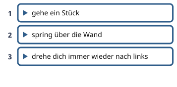
images/kiko-eigenschaften-toms-karten-de.svg© CC-BY-4.0Used on: Properties of algorithms
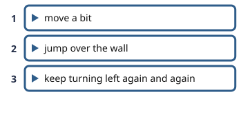
images/kiko-eigenschaften-toms-karten-en.svg© CC-BY-4.0Used on: Properties of algorithms

images/kiko-sequenz-einstieg.svg© CC-BY-4.0Used on: Sequence

images/kiko-sequenz-einstieg-karten-de.svg© CC-BY-4.0Used on: Sequence

images/kiko-sequenz-einstieg-karten-en.svg© CC-BY-4.0Used on: Sequence

images/kiko-sequenz-drei-befehle-de.svg© CC-BY-4.0Used on: Sequence

images/kiko-sequenz-drei-befehle-en.svg© CC-BY-4.0Used on: Sequence

images/kiko-challenge-sequenz-schulhof.svg© CC-BY-4.0Used on: Sequence
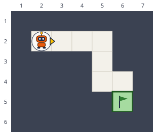
images/kiko-sequenz-zaehlen.svg© CC-BY-4.0Used on: Sequence
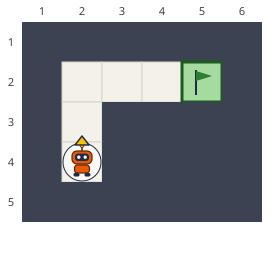
images/kiko-sequenz-auswahl.svg© CC-BY-4.0Used on: Sequence

images/kiko-bloecke-wo.svg© CC-BY-4.0Used on: Programming with blocks

images/kiko-bloecke-wo-programm-de.svg© CC-BY-4.0Used on: Programming with blocks

images/kiko-bloecke-wo-programm-en.svg© CC-BY-4.0Used on: Programming with blocks

images/kiko-bloecke-karten-als-bloecke-de.svg© CC-BY-4.0Used on: Programming with blocks
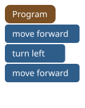
images/kiko-bloecke-karten-als-bloecke-en.svg© CC-BY-4.0Used on: Programming with blocks

images/kiko-challenge-fehler-finden.svg© CC-BY-4.0Used on: Programming with blocks

images/kiko-bloecke-fehler.svg© CC-BY-4.0Used on: Programming with blocks
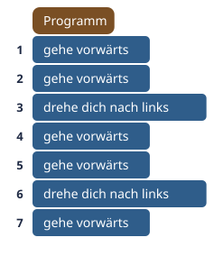
images/kiko-bloecke-fehler-programm-de.svg© CC-BY-4.0Used on: Programming with blocks

images/kiko-bloecke-fehler-programm-en.svg© CC-BY-4.0Used on: Programming with blocks

images/kiko-verzweigung-programm-de.svg© CC-BY-4.0Used on: Selection

images/kiko-verzweigung-programm-en.svg© CC-BY-4.0Used on: Selection
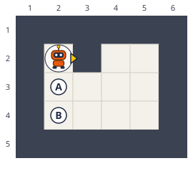
images/kiko-verzweigung-b.svg© CC-BY-4.0Used on: Selection
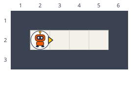
images/kiko-verzweigung-a.svg© CC-BY-4.0Used on: Selection

images/kiko-challenge-wenn-sonst-1.svg© CC-BY-4.0Used on: Selection

images/kiko-challenge-wenn-sonst-2.svg© CC-BY-4.0Used on: Selection

images/kiko-zaehlschleife-programm-de.svg© CC-BY-4.0Used on: Count-controlled loop

images/kiko-zaehlschleife-programm-en.svg© CC-BY-4.0Used on: Count-controlled loop

images/kiko-zaehlschleife-wo.svg© CC-BY-4.0Used on: Count-controlled loop

images/kiko-zaehlschleife-lang-de.svg© CC-BY-4.0Used on: Count-controlled loop

images/kiko-zaehlschleife-lang-en.svg© CC-BY-4.0Used on: Count-controlled loop

images/kiko-zaehlschleife-kurz-de.svg© CC-BY-4.0Used on: Count-controlled loop
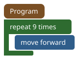
images/kiko-zaehlschleife-kurz-en.svg© CC-BY-4.0Used on: Count-controlled loop

images/kiko-challenge-treppe.svg© CC-BY-4.0Used on: Count-controlled loop

images/kiko-bedingt-programm-de.svg© CC-BY-4.0Used on: Condition-controlled loop

images/kiko-bedingt-programm-en.svg© CC-BY-4.0Used on: Condition-controlled loop

images/kiko-challenge-um-jede-ecke-1.svg© CC-BY-4.0Used on: Condition-controlled loop
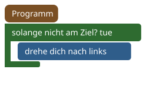
images/kiko-bedingt-endlos-de.svg© CC-BY-4.0Used on: Condition-controlled loop
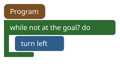
images/kiko-bedingt-endlos-en.svg© CC-BY-4.0Used on: Condition-controlled loop